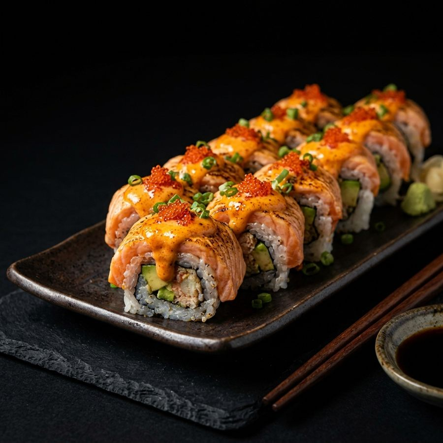
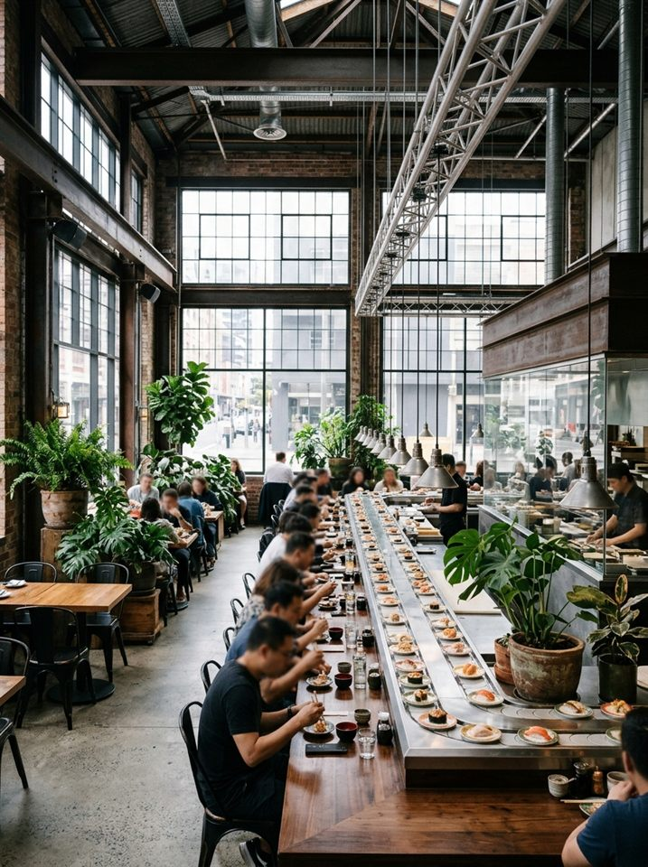
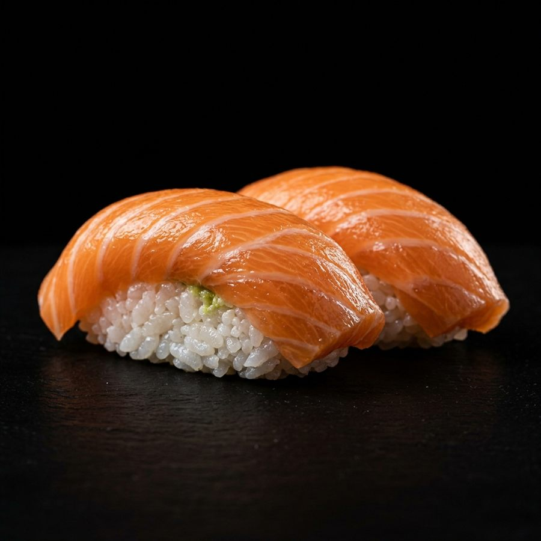
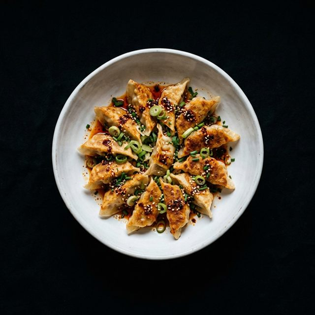
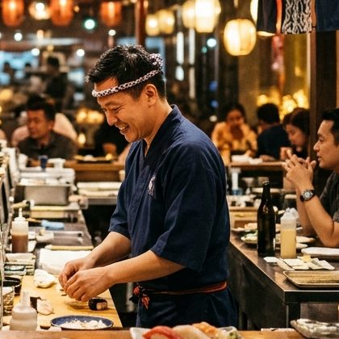

Kabar Dapur & Gerai
Berita Terbaru
Cerita di balik dapur, peluncuran menu baru, pembukaan gerai, dan tips menikmati sushi dari tim chef Sushi Kita.

Gerai Baru Resmi Dibuka di Bandung
Baca Selengkapnya
5 Cara Menikmati Sushi seperti Orang Jepang
Baca Selengkapnya
Jam Hemat: Diskon 30% Setiap Hari Kerja
Baca Selengkapnya
Pagi Hari di Dapur Sushi Kita
Baca SelengkapnyaTidak ada berita yang cocok dengan pencarian Anda.